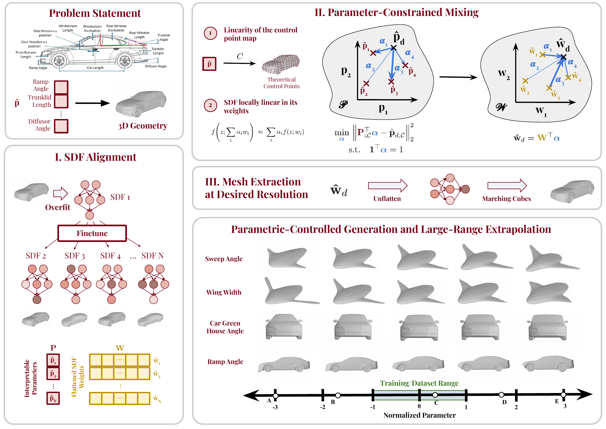
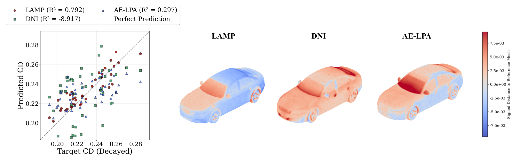
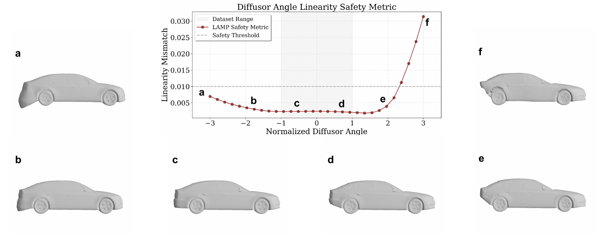

Front bumper curvature
C-HR
Porsche
Supra
Ramp angle
C-HR
Porsche
Supra
Car roof height
C-HR
Porsche
Supra
Generating high-fidelity 3D geometries under explicit parameter constraints is central to engineering design, yet current methods often require large datasets and fail to provide reliable control beyond the training distribution.
We introduce LAMP (Linear Affine Mixing of Parametric shapes), a data-efficient framework for controllable and interpretable 3D generation. LAMP aligns signed distance function (SDF) decoders by overfitting each exemplar from a shared initialization, then generates new designs by solving a parameter-constrained affine mixing problem in the aligned weight space. To improve reliability, we propose a linearity-mismatch safety metric that detects when mixed decoders leave the valid local regime.
We evaluate LAMP on DrivAerNet++, BlendedNet, and additional industry-level vehicle families, including sports cars, SUVs, and convertibles. LAMP enables controlled interpolation with as few as 50 samples, safe extrapolation up to 100% beyond training ranges, and performance-guided optimization under fixed parameters. It significantly outperforms conditional autoencoder and Deep Network Interpolation (DNI) baselines in extrapolation, data efficiency, and parameter fidelity. These results show that LAMP supports low-data, parameter-driven design exploration where fast geometry generation and reliable extrapolation are essential.

LAMP has three stages: (I) aligned SDF weight space construction — a SIREN MLP is overfit to each exemplar mesh from a shared anchor initialization, producing a per-shape weight vector that lives close to all the others in parameter space. (II) parameter-constrained mixing — a target parameter vector is matched by solving an SLSQP affine combination problem in the aligned weight space; the resulting blend yields a synthetic SIREN whose decoded SDF satisfies the target parameters. (III) mesh extraction — marching cubes on the blended SDF field gives an editable surface mesh, which can be further constrained by symmetry and domain-specific decode grids.
Trained on 50 samples per vehicle style, swept with ±100% extrapolation beyond the dataset range.
C-HR
Porsche
Supra
C-HR
Porsche
Supra
C-HR
Porsche
Supra
The same Greenhouse Angle sweep on the C-HR mesh, viewed from three orthogonal cameras to highlight LAMP's structural consistency.
3/4 view
Front
Side

Performance-driven optimization on DrivAerNet++. Left: target vs. predicted drag reduction for LAMP, DNI, and AE-LPA. Right: error heatmaps relative to the reference mesh. LAMP achieves accurate prediction and a physically interpretable modification (a flattened windscreen), while DNI and AE-LPA fail to produce aerodynamically meaningful changes.

LAMP's linearity-mismatch safety metric detects when an extrapolated parameter request has left the regime where the affine weight-space mixing remains valid. Geometries above the threshold are flagged, giving the designer an interpretable veto on visually degenerate outputs.
@article{nehme2025lamp,
title={LAMP: Data-Efficient Linear Affine Weight-Space Models for Parameter-Controlled 3D Shape Generation and Extrapolation},
author={Nehme, Ghadi and Zhang, Yanxia and Shu, Dule and Klenk, Matt and Ahmed, Faez},
journal={arXiv preprint arXiv:2510.22491},
year={2025}
}